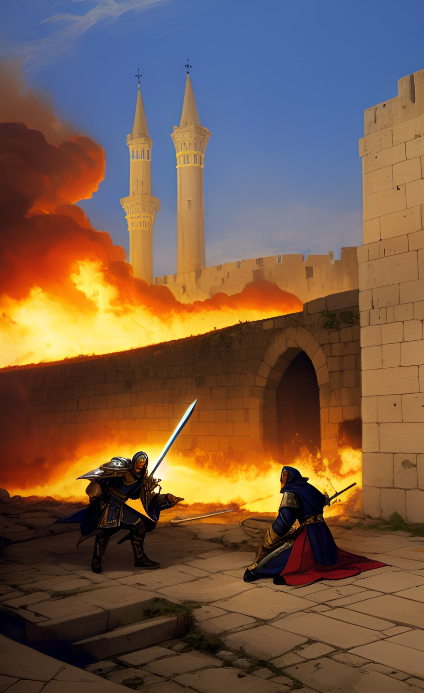

A decepção

Ficar esperando pelo melhor momento lhe rendeu somente tristezas. O imperador analisou melhor o campo e conseguiu enxergá-lo e ficou de olho em seus movimentos. Ao se aproximar ele enfia a espada em suas costas.
Não conseguindo salvar sua filha, e muito menos saindo vitorioso das Crusadas, as consequências são altas. O impiedoso cria a sua filha como se fosse dele, e após alguns anos vai atrás de sua mulher também. Ambas sofrem nas mãos dele sem conseguir escapar de sua tirania.